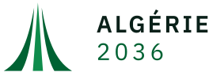
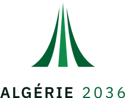
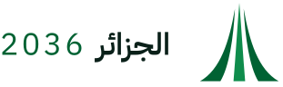
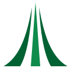
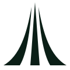

Trois frondes montent d’un socle commun et se rejoignent en pointe. C’est l’abstraction du monument d’Alger que vous m’avez envoyé — pas son dessin. Les trois branches se lisent aussi comme trois pales, ce qui rattache le signe au volet énergies renouvelables de la plateforme, et le fût central comme une colonne qui s’élève : la donnée qui monte du territoire.






Tous les fichiers sont en SVG, texte compris : le nom est converti en tracés, donc le logo s’affiche à l’identique sur une machine où la police n’est pas installée. Le signe seul pèse 404 octets.
Zone de protection : un quart de la hauteur du signe, sur les quatre côtés. Rien n’entre dedans — ni texte, ni filet, ni bord de page.
Tailles minimales : signe seul 24 px à l’écran et 8 mm à l’impression ; verrou horizontal 140 px ; en dessous, on passe à la pastille, qui reste lisible à 16 px.
Vert et blanc, comme demandé. Le vert porte la marque, le blanc porte la donnée : sur une carte à quinze couches, c’est le blanc qui rend l’information lisible. Chaque rapport de contraste ci-dessous est calculé à partir des couleurs elles-mêmes (formule WCAG 2.1), il n’est pas estimé.
#006233R 0 · V 98 · B 51La couleur de la marque. Logo, en-têtes, boutons principaux, éléments actifs.7.51:1 sur blanc — AAA#FFFFFFR 255 · V 255 · B 255La respiration. Fond de toutes les pages de contenu et des cartes.1.00:1 sur blanc — décoratif#0F8C4CR 15 · V 140 · B 76L’accent vivant : liens, sélection sur la carte, états de survol, la fronde centrale du logo.4.31:1 sur blanc — AA gros texte#04331FR 4 · V 51 · B 31Bandeaux sombres, pied de page, fonds de carte en mode nuit.14.01:1 sur blanc — AAA#0B1F17R 11 · V 31 · B 23Texte courant.17.18:1 sur blanc — AAA#5B6B64R 91 · V 107 · B 100Texte secondaire, légendes, unités.5.63:1 sur blanc — AA#D8E2DCR 216 · V 226 · B 220Filets, bordures de tableaux, séparateurs.1.33:1 sur blanc — décoratif#F7FAF8R 247 · V 250 · B 248Fond d’application, fond de carte clair.1.05:1 sur blanc — décoratif#E6F4ECR 230 · V 244 · B 236Fonds de section, ligne de tableau survolée, halo de sélection.1.13:1 sur blanc — décoratifUne règle tient tout le système : le vert de marque n’est jamais une couche. Le vert appartient à l’interface — boutons, sélection, en-têtes. Si le vert servait aussi à représenter une donnée, on ne saurait plus, en regardant la carte, ce qui est le logiciel et ce qui est le territoire.
Le rapport indiqué est celui de la couleur sur fond blanc, et le mot qui suit dit dans quelle couleur s’écrit le texte posé sur la pastille de légende : blanc au-dessus de 4,5:1, encre en dessous. Sur la carte elle-même, la règle ne change jamais : les libellés sont en Encre avec un halo blanc de 2 px, jamais en blanc sur une couleur de couche — c’est la seule façon qu’un nom de wilaya reste lisible quand quatre couches se superposent.
Une seule famille pour les trois langues : IBM Plex. Sa version arabe est dessinée par les mêmes auteurs et au même rythme que la latine — l’arabe n’est donc pas une police de remplacement posée à côté, c’est la même voix. Licence libre (OFL), donc hébergeable sur vos serveurs : aucune requête vers un service extérieur à chaque page.
| Rôle | Taille | Interligne | Graisse | Famille | Emploi |
|---|---|---|---|---|---|
| Affichage | 44 px | 1.1 | 600 | Plex Sans | Titre de page d’accueil. |
| Titre 1 | 32 px | 1.2 | 600 | Plex Sans | Titre de section. |
| Titre 2 | 24 px | 1.25 | 600 | Plex Sans | Sous-section, nom de wilaya. |
| Titre 3 | 19 px | 1.3 | 600 | Plex Sans | Bloc de fiche. |
| Corps | 16 px | 1.6 | 400 | Plex Sans | Texte courant. Jamais en dessous. |
| Corps réduit | 14 px | 1.55 | 400 | Plex Sans | Notes, aides de saisie. |
| Étiquette | 12 px | 1.35 | 500 | Plex Sans | Majuscules, interlettrage +0,06 em. Légendes de carte. |
| Chiffre | 16 px | 1.3 | 400 | Plex Mono | Scores, surfaces, distances, coordonnées. Chiffres à chasse fixe. |
dir="rtl", y compris la carte : légende, panneau de couches et fiche territoire basculent à droite. On utilise les propriétés logiques du CSS (margin-inline-start, padding-inline) pour qu’une seule feuille de style serve les trois langues.C’est la partie de la charte qui protège le projet. Votre cahier des charges pose la règle : FACTS ≠ TARGETS ≠ PROJECTIONS. Une charte graphique doit la rendre visible, sinon elle reste une intention. Trois états, et ils ne se distinguent jamais par la couleur seule : forme, motif et mot écrit. Un lecteur daltonien, une impression en noir et blanc, une capture d’écran reprise ailleurs — dans les trois cas la différence doit survivre.
● Fait ◎ Objectif 2036 ◇ Scénario
Sous chaque chiffre publié, une ligne en 12 px Ardoise, dans cet ordre exact :
Data Center Readiness Score, Free Zone Potential Score, Port-Digital Synergy Score : trois indicateurs, une seule écriture. Le nombre est toujours écrit — la couleur ne remplace pas le chiffre, elle l’accompagne.
Et une règle de fond : un score affiché ouvre toujours le détail de son calcul — les critères, leur poids, et la donnée manquante quand il y en a une. Un score dont les critères ne sont pas consultables est un avis déguisé en mesure. Quand un critère manque, le score n’est pas calculé « au mieux » : il affiche incomplet et dit lequel manque.
La carte est l’écran principal du produit ; sa mise en forme fait donc partie de la charte, pas du développement.
#F7FAF8, eau #E8F0F4, frontières #C9D6CF en 1 px. Le fond ne doit jamais concurrencer les couches.Analyser ce territoire Comparer
| Association | Rapport mesuré | Niveau WCAG 2.1 | Verdict |
|---|---|---|---|
| Encre sur blanc | 17.18:1 | AAA | texte courant |
| Ardoise sur blanc | 5.63:1 | AA | texte courant |
| Blanc sur Vert Algérie | 7.51:1 | AAA | texte courant |
| Blanc sur Vert profond | 14.01:1 | AAA | texte courant |
| Vert Algérie sur blanc | 7.51:1 | AAA | texte courant |
| Vert 2036 sur blanc | 4.31:1 | AA gros texte | titres ≥ 24 px seulement |
| Blanc sur Vert 2036 | 4.31:1 | AA gros texte | titres ≥ 24 px seulement |
| Encre sur Vert pâle | 15.14:1 | AAA | texte courant |
Le seul couple à surveiller est le Vert 2036 sur blanc. Il est retenu pour les liens et les états actifs, pas pour du texte courant ; en texte de lien, il est systématiquement souligné, de sorte que le lien reste identifiable sans la couleur.
logo/ — 10 fichiers SVG (horizontal, vertical, arabe, signe seul, monochromes, pastille), texte converti en tracés.logo/png/ — les mêmes en PNG à fond transparent, pour les outils qui ne lisent pas le SVG. Le SVG reste la référence.polices/ — IBM Plex Sans, Sans Arabic et Mono, sous licence OFL, à héberger sur le serveur.charte.html — ce document, à ouvrir dans un navigateur ou à imprimer en PDF.outils/marque.py — le générateur du logo. Le tracé des trois frondes est écrit une seule fois ; toutes les déclinaisons en découlent.outils/charte.py — le générateur de ce document. Les contrastes sont calculés, pas saisis.